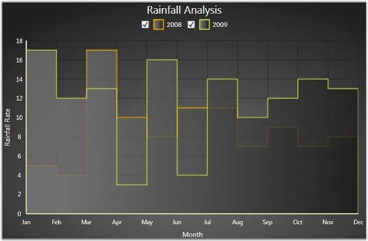

The Step Area chart is similar to the Area chart. Step Area charts use horizontal and vertical lines to connect data points resulting in a step like progression.
The following code example illustrates how to create a Step Area Chart.
|
[XAML]
<syncfusion:ChartSeries Type="StepArea" Label="2008" Interior="{StaticResource Series}" Stroke="#FFEAA700" StrokeThickness="2" EnableEffects="False"/>
<syncfusion:ChartSeries Type="StepArea" Label="2009" Interior="{StaticResource Series}" Stroke="#FFBFD147" StrokeThickness="2" EnableEffects="False"/> |

Figure 33: Step Area Chart